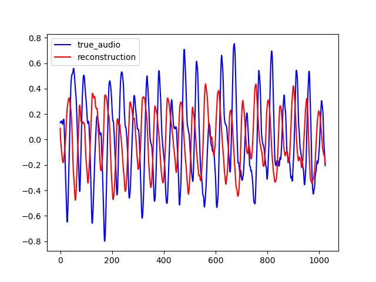

IGAN, InpaintingGAN is a neural network to inpaint magnitude spectrum. It can be trained to inpaint the magnitude spectrum of an audio frame of length T second, given the previous and subsequent T seconds. PGAN, PredicitonGAN is an adaptation of IGAN to perform audio prediction. It can be trained to predict an audio frame of T second, given the T previous second. This webpage accompaing the github repository.
Here are some sample output by IGAN for T=0.064. To reconstruct the audio from the magnitude spectrum, the Griffin-Lim algorithm was used. As you can see on the various examples, the reconstructed spectrum is rather good, but blurrred. On the other hand, the audio waveforms look similar to the ground truth even if thay are not close from them. This is explained by the fact that the Griffin-Lim does not output the exact waveform, even if it is fed with the real magnitude. Moreover, it works from an approximation of the real magnitude spectrum.
On the example below, one can see the spectrum outputs by IGAN and the corresponding waveform obtained with an extra Griffin-Lim step. To obtain this result, IGAN was trained for 200 epochs on the small FMA dataset. The network performence can be probably improved by letting it train longer.
| Spectrum | Waveform |
|---|---|
|
 |
|
| |
|
|
|
| Original Audio | Reconstructed Audio |
|---|---|
Here are other sample for T=0.128
PGAN is an adaptation of IGAN for audio prediction. Now, the neural network predict the magnitude spectrum of an audio frame of length T given the T past sample.
On the example below, one can see that PGAN perform less well than IGAN. It is because the new task is much more challenging. However, the result are still interesting.
To perceptually evaluate the model, we used to fill in one gap at 0.5s in a 2s long audio sample. Then, we run a matlab function to compute the ODG between the original audio and the audio with the filled gap. The example below are obtained with IGAN with T = 0.064
| Original Audio | Reconstructed Audio | Audio with hole |
|---|---|---|
To test our model generalization ability, we used it to inpaint on the MAESTRO dataset while training it on the small version of the FMA dataset. The FMA dataset is composed of 3000 track of 30s music of 8 diffferent style while the MAESTRO dataset is composed of classical piano record. The example below are obtained with IGAN with T = 0.064
| Spectrum | Waveform |
|---|---|

| 
|

|
| Original Audio | Reconstructed Audio |
|---|---|
"Enabling Factorized Piano Music Modeling and Generation with the MAESTRO Dataset." , Curtis Hawthorne, Andriy Stasyuk, Adam Roberts, Ian Simon, Cheng-Zhi Anna Huang, Sander Dieleman, Erich Elsen, Jesse Engel, and Douglas Eck. In International Conference on Learning Representations, 2019.
A Dataset for Music Analysis, Defferrard, Michael and Benzi, Kirell and Vandergheynst, Pierre and Bresson, Xavier. In 18th International Society for Music Information Retrieval Conference (ISMIR)